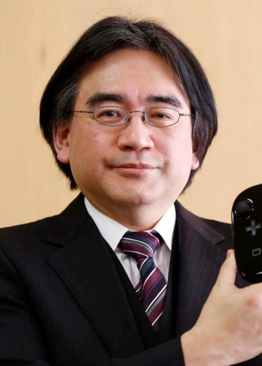

岩田聪（Satoru Iwata，1959年12月6日-2015年7月11日），出生在日本北海道札幌市，毕业于东京工业大学信息工程专业。大学毕业后，他加入HAL研究所，1993年升任HAL研究所社长。2000年，岩田聪被招入任天堂任经营企画部部长。 两年后，岩田聪成为任天堂第四任社长，也是首位非山内家族成员的社长。2015年10月，获第33届金摇杆奖终身成就奖。
2015年7月11日，岩田聪因胆管肿瘤增生逝世。享年55岁。
岩田聪逝世在玩家群体中造成的震动超过了当年山内溥和大川功逝世后的情形。一个风趣幽默，有智慧有才干的玩家，这是岩田聪广受欢迎的原因。
他的作风和任天堂老字号企业给人的印象是截然不同的。岩田聪的任天堂像是一个心系玩家的，有匠人情怀的娱乐企业。他自己的形象就十分和蔼可亲，再加上种种变化，都令玩家能够更加亲近任天堂。
岩田聪的离去，代表了一种人格，一种企业风格的逝去。我们在以后恐怕再也看不到像这位一样活泼有趣和蔼可亲，又富有智慧，就像朋友的游戏公司CEO了。
作为全球最大的电玩游戏机制造商、便携式游戏机平台的领导者，任天堂开发7代电视游戏机，推出超过250款游戏，超过24亿套游戏售出。任天堂创造了游戏史上最为经典的游戏，如《超级马力欧》、《塞尔达传说》（The Legend of Zelda）、《宝可梦》（Pokémon）等。
岩田聪所提倡的"开发简单好玩游戏"的理念为任天堂带来了丰厚的回报。
尤其是他以先锋的姿态，为修好与第三方的关系所做出的重大努力，受到了一致的认可。而他成功拉拢的，诸如Sega，Namco，Capcom这样的重头第三方，其作用已经在GC时期凸显无疑。